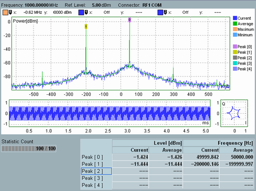

Measurement Dialog
The FFT spectrum analyzer dialog shows the spectrum diagram and optionally an I/Q vs. time and an I/Q constellation diagram. A table lists the frequencies and levels of up to 5 peaks in the spectrum.

FFT spectrum analyzer: two-tone signal analysis
Below the title bar, the dialog shows the most important RF and analyzer settings, see "FFT Spectrum Analyzer". The diagrams and tables contain the following results.
- Spectrum diagram
Shows the power of the measured RF signal in a selectable frequency range ("Frequency Span"). With default scaling, the 0 Hz abscissa value in the center of the diagram corresponds to the center frequency of the RF analyzer. The measurement control settings, in particular "FFT Length" and "Detector" affect the displayed results.
Up to 5 markers on the trace show the detected peaks, sorted according to their power. To refine the peak search, you can select up to five different search ranges ("Marker > Peak Search Setup"). In the measurement example above, a two-tone CW signal is analyzed. - Time domain diagrams
The time domain diagrams show the normalized I and Q amplitudes as a function of time (left diagram) and as a vector in the I/Q plane (right diagram). Both diagrams are useful for checking the input signal, in particular for measurements on bursty signals using a power trigger.
The time range of the left time domain diagram is equal to the total time record length (FFT window), depending on the "FFT Length" and "Frequency Span" settings. Use "Display > Time Domain On / Off" to show or hide the diagrams. For more examples, see "Time Domain and IQ Diagrams". - Table
The table shows the levels and frequencies of the detected peaks in the spectrum diagram. In the measurement example above, the FFT spectrum analyzer detects two narrow-band tones at approx. 50 kHz and -200 kHz off the RF analyzer frequency. - Statistic count
Progress bar for the measurement. During the first single shot after the start of the measurement, the bar shows the current measurement interval relative to the "Statistic Count". A filled progress bar indicates that the first shot is complete and the statistical depth has been reached.
For more information about customizing the diagrams, refer to: